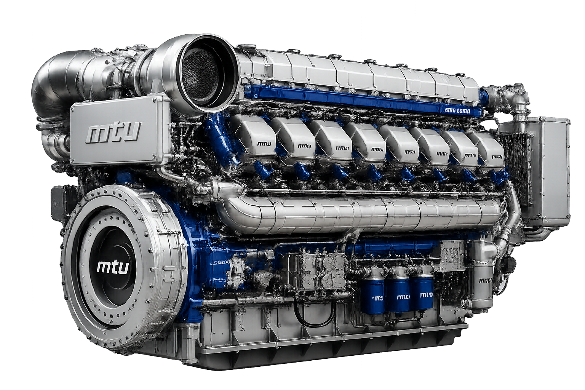

Complete MTU Series 4000 Preventive Maintenance Guide
Learn complete maintenance schedules, inspection procedures, lubrication intervals and servicing recommendations.
Read Article →Explore professional maintenance guides, operating instructions, spare parts catalogs, Gas Engine Documentation, Automation & Electronics, engineering documentation for MTU diesel engines. Also MTU Special Tools for Rent/Sale.

Technical Procedures
Illustrated Catalogues
Inspection Schedule
Engine Instructions
Access MTU technical documentation, maintenance resources, operating instructions, tools catalogues and spare parts catalogues.
Preventive maintenance schedules, inspection procedures and servicing.
Official MTU operating manuals and user documentation.
Illustrated spare parts catalogues with detailed diagrams.
Comprehensive catalogs of MTU tools and accessories.
Access professional documentation for MTU gas engines, including operating manuals, maintenance schedules, spare parts catalogs, functional descriptions, installation conditions, service documentation and Drawings for industrial and power generation applications.
Browse professional documentation for MTU automation systems, engine management, digital monitoring platforms, marine automation and industrial applications including PowerGen, Rail and Oil & Gas solutions.
Discover professional MTU special service tools for engine maintenance, inspection, diagnostics, overhaul and repair. Browse dedicated tool catalogs covering multiple MTU engine series and maintenance procedures.
Dedicated MTU service tools for maintenance and overhaul operations.
Professional inspection and measurement equipment for MTU engines.
Diagnostic instruments for troubleshooting and engine performance analysis.
Browse the complete collection of MTU rental tools and accessories.
Special Tools
Engine Series
Expert maintenance guides, troubleshooting procedures, operating instructions and engineering resources for MTU diesel engines.

Learn complete maintenance schedules, inspection procedures, lubrication intervals and servicing recommendations.
Read Article →Inspection & servicing
Diagnostic guide
Workshop procedures
Oil specifications
Access professional MTU documentation, maintenance resources and technical manuals through a fast, organized and user-friendly platform.
Official technical manuals, spare parts catalogues, operating instructions and maintenance schedules.
Locate documentation instantly using model, engine series or document category.
Diesel engines, gas engines, automation systems and rental tools.
Documentation library continuously updated with newly available resources.
Connect us via Email : enginemanualshub@gmail.com